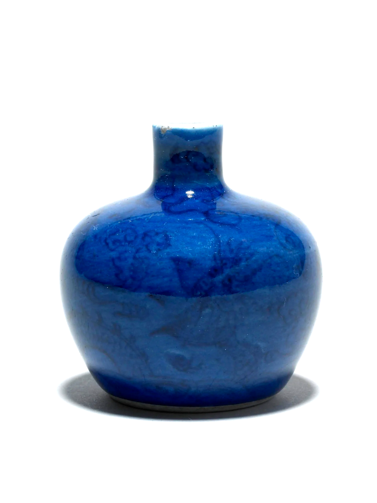

简介：
中国传统文化极其丰富多样，包括文学、历史、哲学、宗教、艺术、民俗等各个方面。
中国历史悠久且悠久的历史中凝聚着许多文化瑰宝。从夏朝到现代，中华文化在这漫长的历史长河中从齐家文化、周礼文化、儒家文化、道家文化和佛道两化融合的文化发展中走向了世界。
在哲学方面，中国的传统思想有着强烈的人文主义色彩，倡导人与自然和谐共生，人际关系和谐，追求道德美德。中国传统哲学强调道义观念，注重个人的修养和社会秩序，对人的行为和接触至关重要。
文化含义：
文化本身是一个比较大的概念。笼统地说，文化是一种社会现象，是人们长期创造形成的产物。同时又是一种历史现象，是社会历史的积淀物。广义的文化是人类创造出来的所有物质和精神财富的总和。其中既包括世界观，人生观，价值观等具有意识形态性质的部分，又包括自然科学和技术，语言和文字等非意识形态的部分。
确切地说，文化是指一个国家或民族的历史、地理、风土人情、传统习俗、生活方式、文学艺术、行为规范、思维方式、价值观念等。根据英国人类学家爱德华·泰勒的定义，文化是“包括知识、信仰、艺术、法律、道德、风俗以及作为一个社会成员所获得的能力与习惯的复杂整体”。其核心是作为精神产品的各种知识，其本质是传播。文化是人类社会特有的现象。文化是由人所创造，为人所特有的。有了人类社会才有文化，文化是人类社会实践的产物。在中国人民长期的社会实践中， 形成以儒家、佛家、道家三家之学为支柱的中华传统文化。
主要种类：
中华传统文化以儒家、佛家、道家三家之学为支柱, 包括思想、文字、语言，之后是六艺，也就是：礼、乐、射、御、书、数，再后是生活富足之后衍生出来的书法、音乐、武术、曲艺、棋类、节日、民俗等。传统文化是我们生活中息息相关的，融入我们生活的，我们享受它而不自知的东西。如，佛家的“烦恼”、“差别”、“平等”、“世界”等。
中华传统文化的双重属性反映了传统文化之间（如：儒家/道家之间；儒家/法家之间、儒家/佛家之间）存在对立与统一的辩证关系。他们之间相渗透，形成古文、古诗、词语、乐曲、赋、民族音乐、民族戏剧、曲艺、国画、书法、对联、灯谜、射覆、酒令、歇后语文化形式等。
在民俗方面，则以传统节日的形式体现出来。这些传统节日包括（均按农历）：正月初一春节（农历新年）、正月十五元宵节、四月五日清明节、清明节前后的“寒食节”、五月五日“端午节”、七月七日七夕节、八月十五中秋节、腊月的“腊八节”、腊月三十除夕等。包括传统历法在内的中国古代自然科学也是中华传统文化的组成部分。
至如今，古今中外的学者们尚不能得出定论，除了多维视野的原因外，还有语言学角度的客观歧义。广义上讲，文化是人类精神生活与物质生活的总和。
首先，从时间角度上讲，有原始文化，古代文化，近代文化，现代文化。
其次，从空间角度讲，有东方文化，西方文化，海洋文化，大陆文化。
其三，从社会层面上讲，有贵族文化，平民文化，官方文化，民间文化，主流文化，边缘文化（姜义华先生分之为规范性文化，非规范性文化，半规范性文化。这种分法比较新颖，所以着重介绍一下。所谓的规范性文化，姜先生认为是以儒家经典为经，以历代官修史志为纬，在长期流迁演化中广泛吸收了佛，道，法，阴阳，纵横，玄，外来文化等诸家学说而形成的经史文化，是中国小农社会的具有最高权威的规范性文化。与此相应的，则是普遍存在于一般民众中的生产方式，生活方式，人与人的种种关系，风俗，习惯，信仰，追求，日常心理，潜在意识及形形色色的成文或不成文制度中的非规范性文化。除去这两种文化之外，还有介于两者之间的半规范性文化，指雅俗程度不一的大量文学艺术作品，对经史文化呈半游离状态的各种文化教育，宗教娱乐活动，比如《水浒传》《三国演义》《隋唐演义》《西游记》等俗文化代表作。当然了，我觉得姜先生的分法似乎只针对中国传统文化才有效）。
其四，从社会功用上，分为名号文化、礼仪文化，制度文化，服饰文化，校园文化，企业文化。
其五，从文化的内在逻辑层次上，又可分为物态文化，心态文化，行为文化，制度文化四个层次。
其六，从经济形态方面， 又有牧猎文化，渔盐文化，农业文化，工业文化，商业文化之分。还有人在其中搞着色，黄色文化，蓝色文化什么的。
文化特点：
1.世代相传，中国的传统文化在某些短暂的历史时期内有所中断，在不同的历史时期或多或少的有所改变，但是大体上没有中断过，总的来说变化不大。
2.民族特色，中国的传统文化是中国特有的，与世界上其他民族文化不同。其显著特点是：儒、佛、道三家民族文化，共同支撑，又相互融合。
3.历史悠久。如中国传统文化的儒家文化有五千年的历史。
4.博大精深，“博大”是说中国传统文化的广度—丰富多彩，“精深”是说中国传统文化的深度—高深莫测。
表现形式：
理论：
传统纵览，农业文化，诸子百家，皇宫官府。
技艺：
琴棋书画。
传统：
十二生肖，传统文化，传统节日，中国戏剧，中国建筑，汉字汉语，传统中医，宗教哲学。
民俗：
民间工艺，中华武术，地域文化，民风民俗，衣冠服饰。
保护措施：
（一）区别对待中国传统文化优劣，有利于社会前进的脚步。
优：民本思想，商周时代有“民惟邦本，本固邦宁”的说法；荀子说：“水则载舟，水则覆舟” 的精神境界；孟子：“我善养吾浩然之气”；杜甫“会当临绝顶，一览众山小”，还有“位卑不肯忘忧国”、君子之交淡如水，小人之交甘若醴、“先天下之忧而忧，后 天下之乐而乐”、“人生自古谁无死，留取丹心照汗青”等
劣：推崇守旧，“天可变，地可变，祖宗之法不可变” 。“两耳不闻窗外事，一心只读圣贤书”的迂腐、官僚贵族欺压人民、抑制百姓通过商业或其它途径谋求更多的物质利益。压制个性，压制自由思想，阻碍发展等
（二）以时代的角度，以比较的观点和方法看问题。
“独在他乡为异客，每逢佳节倍思亲”、“慈母手中线，游子身上衣”，崇高天伦。 “天行健，君子自强不息”，不屈不挠的精神。“仁者爱人”高尚道德。马援马革裹尸，霍去病“匈奴未破，何以家为”，曹操“对酒当歌，人生几何”，王昌龄“秦时明月汉时关”， 功业抱负。“感时花溅泪，恨别鸟惊心”、“人闲桂花落，月静春山空”，天人共鸣等都是西方文化望尘莫及的。而中国传统文化的这些长处，必将成为世界文化的极其珍贵部分。
中国传统文化是在漫长的古代历史中形成的，是以封建社会文明为其背景。而西方文化，严格地说，是在文艺复兴之前才逐渐形成，是以资本主义文明为背景的。一个是封建色彩浓厚的文明，一个是资本主义色彩浓厚的文明，这就决定了中国传统文化不可避免地存在落后性，在许多方面存在着薄弱之处，但也不能一味否决，而在于能否取其精华。
（三）继承、借鉴与创新，并主动融入世界文化，是中国今后文化发展必由之路。
文化的建设，必须坚持继承、吸收、创新。
主要是有价值的东西，反映事物本质和规律，一些高尚品质。但反对无限拔高。中国传统文化是在特定时期形成的，必定有其时代局限性，任何夸大其辞，都是错误的。
这些年来，有些人看到周易、论语、禅宗等思想成果的价值，这本是一件好事。但盲目崇拜，极尽溢美之词，那便走上了歧路了。甚至有人在看到西方文明碰到一些挫折后，便反过来大力宣扬：西方文明已经破产了，儒家文明重新复兴是大势所趋。中华文明是要复兴，但并非要复兴儒家文化，而是要建立科学、民主、崇高人的尊严和价值的新中华文化。
整个世界文化角度来学习，世界各民族的文化互有长短，应该互相学习，才能共同进步。
对于个人而言，我们需要做到：
一、有一定的文化积累。
二、明确方向。即与社会发展趋势相一致，与以人为本、以民为本的价值观相一致。
三、要有宽松环境。要允许磨擦事物存在、发展，不能视新事物为洪水猛兽，要鼓励不同思想文化自由交锋。
四、勇气和意志。需要整个民族的勇气和意志。旧的文化是过去社会前进的动力，新的社会也需要新的文化持之不懈地奋斗，并尊重事物发展规律，最终必然能取得胜利。
中国传统文化的断代，已经360多年。由于我们在很长时间内不能以开阔的胸怀理解资本主义，对于资本主义文明一直保持一种强烈的警惕性，不能积极地学习西方文化那些先进成果，结果反过来损害了我民族传统文化现代化进程。 这十多年间，又出现国学热，涌现一些国学大师。但笔者发现，一些人只是就国学谈国学，已走入歧路。谈国学，应站在整个世界文化背景去研究。要研究国学，就必须了解现代社会发展趋势。这样，他研究国学，才能真正得出比较全面、成熟、中肯的结论。
目录：
⼀、简介
⼆、文化含义
三、主要种类
四、文化特点
五、表现形式
六、保护措施
